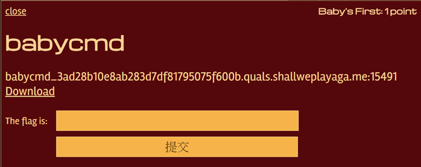
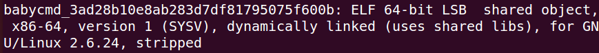
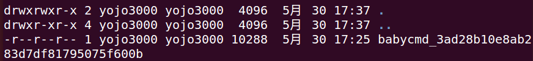
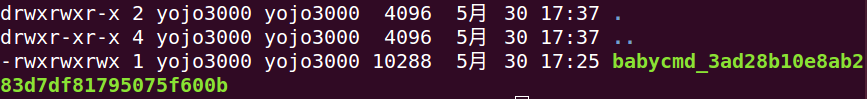
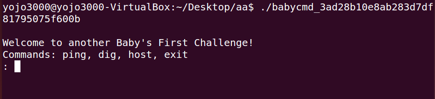
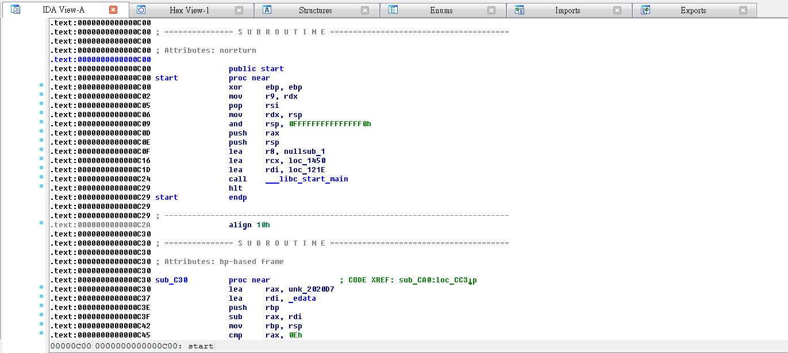
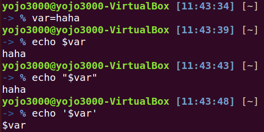
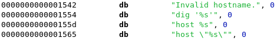
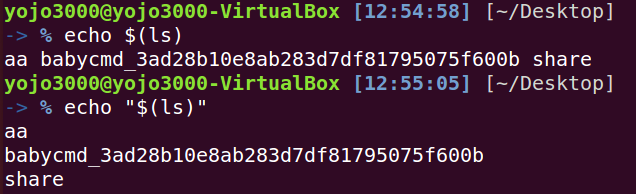
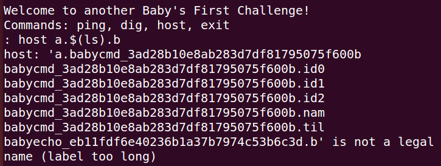

2015年 的 defcon 就在我隊一題都沒解出來之下結束了，雖然有點糗但是小弟把比賽的部分題目及檔案順手備份了下來，搭配查尋神人們提供的解答記錄神人們的嘗試過程，期待下次參賽能多答幾題阿阿阿。。。
此次 defcon 的題目分成這五大類:
- Baby’s First
- Coding Challenge
- MisCellaneous
- Pwnable
- Reverse Engineering
content
此文重點 babycmd 為 Baby’s First 題型中的第一題，顧名思義就是連 baby 都會的東西(羞愧)，而 cmd 則暗示著這是在 terminal 就能解決的問題，題目如下圖

從圖中的 download 按鈕就能下載該題提供的檔案
下載之後發現檔名是個莫名其妙且沒有附檔名的未知檔案
(babycmd_3ad28b10e8ab283d7df81795075f600b)
從 windows 底下沒辦法正常的使用這個檔案，推測大概是 linux 下才能使用，因此在 virtualbox 中事先準備好的 ubuntu 來開啟這個檔案，關於虛擬機的架設及共用資料夾設定請看下列文章
進入 Ubuntu 並從共用資料夾取得該檔案之後，首先就是先查詢一下這個檔案到底是什麼，可以利用 file 指令查詢
1 | file babycmd_3ad28b10e8ab283d7df81795075f600b |
得到該結果

從上圖中可知該檔案為適用於 64 bit linux os 的 ELF 執行檔，因此嘗試執行之
1 | ./babycmd_3ad28......(檔名) |
發現好像不能執行，一般而言不能執行的原因大概是因為權限問題，如果該檔案不提供執行權限的話當然就沒辦法執行，因此透過指令檢查檔案權限
1 | ls -al |

從前面的 -r–r–r– 得知該檔案目前只允許讀取(read)，不允許寫入(write)和執行(execute)，因此嘗試修改該檔案的權限
(其實原本檔案的權限好像不是長這樣，但是反正就是不能執行)
1 | chmod 777 babycmd_3ad28......(檔名) |
關於檔案權限的概念及操作細節請看此文
chmod 教學
總之設定成 777 就代表該擋案可以被
- 文件擁有者
- 文件擁有者所在之群組的使用者
- 其他使用者
做讀取，寫入，執行
此時再做一次 ls -al 就會發現權限改變了

改變權限之後應該就可以執行囉，執行後出現一個操作介面

這個程式看起來提供使用者輸入一些指令，分別是 ping dig host exit，這些指令都是 linux 常用的網路相關指令，詳細使用方式請看連結
對於這種提供 command 的程式第一個想法就是 buffered overflow，可透過輸入各種形式的字串找出程式沒有檢查到的輸入格式漏洞，例如:
- 極長的字串 e.g.: 1000個a
- 包含 %s %d %p 等 C/C++ 語言中的 printf 資料型態引數 (format string)
- 空字串
- 包含二進位資料的字串
- 常用的 admin password 等
但是在這個程式中好像沒有測出可疑的 output，既然在程式表面提供的操作介面沒有線索的話，那就朝內部挖掘吧，”內部”可以有很多種形式，例如可以將檔案反組譯成組合語言，或是用16進位(hex)、2進位(binary)等等表示方式，至於要怎麼將檔案拆解(逆向工程)呢？先來介紹下工具吧！
IDA Pro 是 Windows 底下最常被使用的工具，可以用來反組譯(disassemble)，各種進位拆解，甚至可以反編譯(decompile)回 C 語言
hopper 是可以在 Linux 及 OSX 下的逆向工具，因為 CTF 常常需要在 Linux 環境下操作，如果不想另外準備 Windows 的話可以考慮使用此工具
(因為這兩個貌似不是免費的，請自己找破解或是於官網購買)
這裡使用 ida pro (for windows) 操作，其實兩者操作方式還蠻接近的，若需要 hopper 教學請看此 youtube 教學
開啟 ida pro 後匯入欲處理的檔案，程式會將其反組譯成組合語言，CTF 的題目中常常會把線索藏在組合語言或是 16 進位之中

ida pro 可以將組合語言反組譯成 C 語言，利用 File->produce file->create C file 就可以得到 .c 檔案
在 C file 中可以看到許多檢查輸入的方式，而其中一個輸出有些許異常
1 | if ( !(unsigned int)sub_DCC((__int64)&cp) ) |
該程式把接受使用者輸入值的變數做 print 輸出來當作 linux 指令
1 | \_\_sprintf_chk(&command, 1LL, 384LL, "host \"%s\"", &cp); |
而在 linux 中對於變數的處理方式有下列特色

其中雙引號中的 $var 會被當作變數處理，而單引號中的 $var 則被當作字串處理
可以發現在 host 檢查指令中特別加上了 \” ，做正規表達故意將雙引號當做輸出的一部分

(若不對雙引號做正規表達式，那該雙引號就會對照到前面的雙引號而讓字串結束)
若有疑問可見 正規表達式教學
先介紹另一種 linux 的指令使用方式
指令替代 (command substitution)

若在變數中包覆 linux 指令(ls)當做echo 的 input 的話就會被視為指令使用，而且在外圍包覆雙引號(“”)也能成功執行
因此，如果提供的使用者輸入包含了加上雙引號的指令替代，那 linux 就執行這個 output 中的指令
回頭檢視整段檢查 function
1 | __int64 __fastcall sub_10BD(__int64 a1) |
從 else 的 output 可以看出程式逐項檢查輸入值的原則，而異常輸出的觸發條件是在
“當輸入的值 (ip) 的格式合法(valid) 時，若該 hostname 不存在 (invalid host name) “
因此搭配指令替代提供下列輸入
1 | host a.$(ls).b |
得到的輸出如下

可知已經成功的利用摻雜 linux 指令的輸入讓程式出現預期之外的結果，ls 指令成功的列出了目前所在位置的檔案
既然可以利用輸入下指令那就好辦啦，現在利用 nc 指令連結至題目提供的位置
(即為第一張圖中的奇怪字串，但是他其實是個 domain name 這樣)1
nc babycmd_3ad28b10e8ab283d7df81795075f600b.quals.shallweplayaga.me 15491
nc 指令可參考此文Linux 常用網路指令
連結之後就會連結到比賽主機的 babycmd 程式，透過相同手法可以摻雜 linux command 得到各種訊息，例如帳號名稱，家目錄檔案等等
而本題的答案 (flag) 就放在帳號家目錄中 (/home/babycmd/flag)，用 cat 指令就可以成功 catch the flag (CTF) 囉！